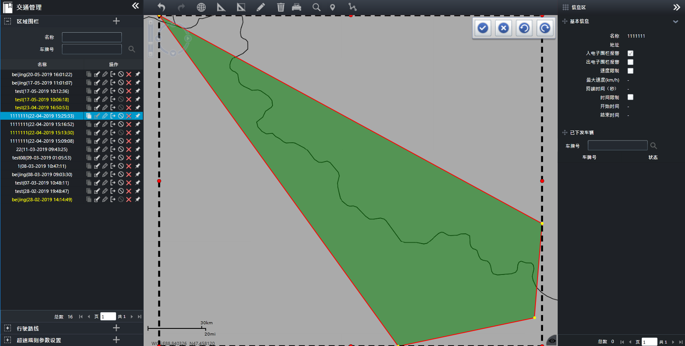

编辑围栏形状
可对已经添加的电子围栏形状进行修改。
| 1. | 在电子围栏主界面的信息列表中选择一个电子围栏，单击右侧〖 
Fig 56 编辑围栏形状 围栏上的节点为在编辑形状时可操作的点，其中黄色节点为变形点，红色节点为控制点，外框顶部中间的绿色节点为旋转点。
|
| 2. | 单击黄色的节点，并拖动，可改变电子围栏的外形，同时，双击黄色的节点可将其删除；单击红色控制点并拖动，可对电子围栏进行伸缩；单击绿色旋转点并拖动，可旋转电子围栏。
如果围栏的黄色节点超过34个，则可双击黄色的节点来删除多余的点。
|
| 3. | 编辑完成后，单击〖 |
| 4. | （可选）单击〖〗，将取消此次电子围栏的编辑。 在电子围栏的编辑过程中，单击〖
|